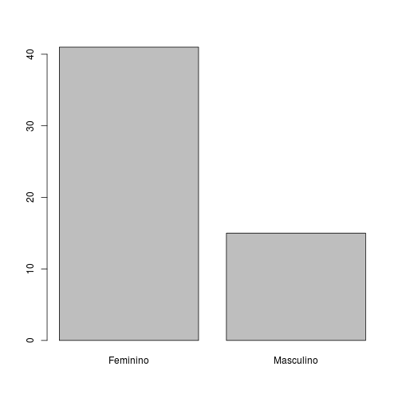
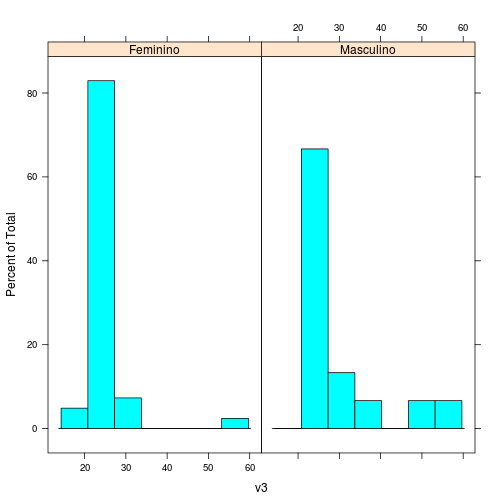
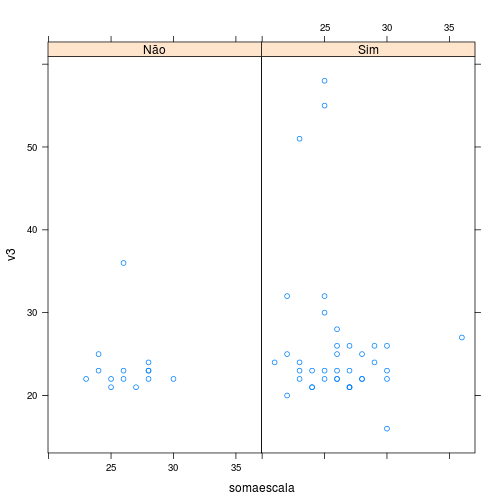
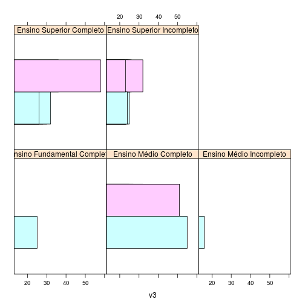
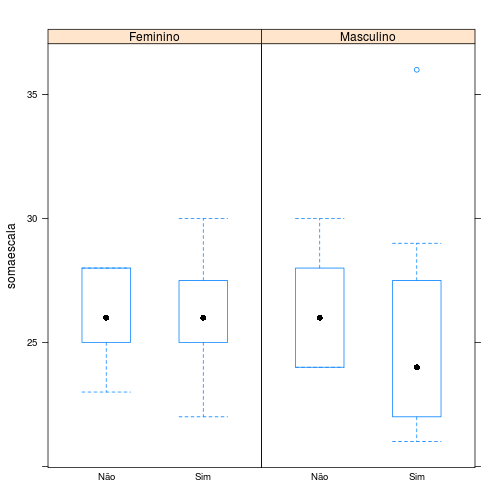

Downloads
Estatística descritiva - com figuras
Curso Ninja de Estatística Aplicada com R para Ciências da Saúde
Henrique Gomide
CREPEIA, PET - Psicologia
Antes de começar
Carregando o banco da aula e pacotes
dados <- read.csv(file.choose(), header=TRUE, sep=",")
require(ggplot2)
require(lattice)
Uma imagem vale mais que mil palavras...
- Introdução ao gráficos no R
- Histogramas
- Gráficos de dispersão
- Gráficos de barra
- Boxplot
Exemplo

Introdução
- Existem três pacotes principais para fazer gráficos: base, lattice e ggplot2
- PQP eles são diferentes! No entanto, existem alguns parâmetros em comum!
Base e Lattice
- Base - simples e mais fácil de usar. Bom para visualizar poucas variáveis
- Lattice - feito para explorar relações mais complexas dos dados.
Histogramas
hist(dados$v3)
Gráficos de dispersão
plot(dados$v3, dados$somaescala)
Gráficos de barra
graphBar <- table(dados$v6)
barplot(graphBar)

Boxplot
boxplot(dados$somaescala ~ dados$v9)
Lattice
- Formato típico
tipodegrafico(formula, data = nome do banco de dados)A fórmula especifica o valor e os fatores para visualização. Exemplos: - ~ x | a - especifica a variável x para os fatores a (idade por gênero)
- x ~ y | a*b - especifica a relação entre númericas x e y para as combinações dos fatores a e b (soma da escala por idade para gênero divido por religião)
Histogramas
histogram(~v3 | v6, data = dados)

Gráficos de dispersão
xyplot(v3 ~ somaescala | v9, data = dados)

Gráficos de barra
barchart(~v3 | v8, groups = v6, data = dados)

Boxplot
bwplot(somaescala ~ v9 | v6, data = dados)

título no gráfico- main
Um exemplo: histogramas
hist(dados$somaescala, main = "Título")
rótulos dos eixos no gráfico- xlab e ylab
hist(dados$v3, main = "Título", xlab = "Idade em anos", ylab = "Frequência")
limite dos eixos - xlab e ylab
hist(dados$v3, main = "Título", xlab = "Idade em anos", ylab = "Frequência",
xlim = c(0, 80), ylim = c(0, 40))
cores - col
Você pode especificar cores através de index, names e hexadecimal. Aqui tem um guia
par(mfrow=c(1,3))
hist(dados$v3, main="Título", xlab="Idade em anos", ylab="Frequência", xlim=c(0,80), ylim=c(0,40), col="blue")
boxplot(dados$somaescala, dados$v6, col = "green")
plot(dados$somaescala, dados$v3, col = "red")
par(mfrow=c(1,1))
cores - col

Referências
Dicas de gráficos - http://www.statmethods.net/advgraphs/parameters.html Galeria de gráficos em R - http://www.sr.bham.ac.uk/~ajrs/R/r-gallery.html